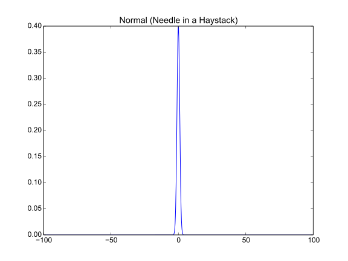

Data Types¶
In [EOM] four types of data are identified:
- Unimodal
- Needle in a haystack
- Noisy
- Decpetive
Here are how we can approximate some of these types.
Unimodal¶
A normal distribution.
arange |
|
stats |
|
stats.norm |
|
stats.norm.pdf |
x = scipy.arange(-4, 4.1, 0.1)
y = scipy.stats.norm.pdf(x)

A Beta Distribution.
stats.beta |
|
stats.beta.pdf |
x = scipy.arange(0, 1.01, 0.01)
y = scipy.stats.beta.pdf(x, 2, 5)

Needle In A Haystack¶
This is another normal distribution but with long tails.
x = scipy.arange(-100, 100.1, 0.1)
y = scipy.stats.norm.pdf(x)

Noisy¶
This is a random sampling from a normal distribution with additional terms added.

y = scipy.stats.norm.rvs(size=100)
y += y**2 + scipy.sin(y)
Deceptive¶
This isn’t really the same as the ‘deceptive’ data described in [EOM] but it does have local and global maxima.
x = scipy.arange(-4, 4.1, 0.1)
y = scipy.stats.norm.cdf(x) + scipy.cos(x)**2 - scipy.sin(x)